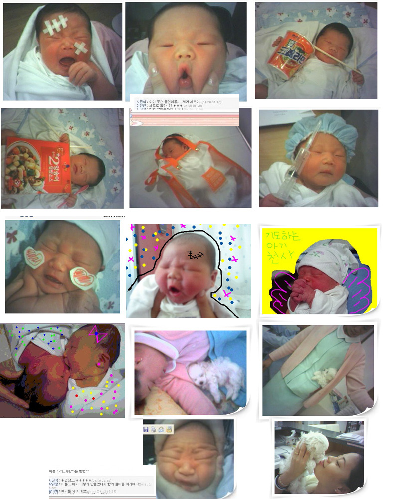

## '참고인' 님의 지적에 따라 %% 의 내용을 추가합니다. (2005/5/12)
어제와 오늘.
이에 대한 사회의 반응은 크게 두가지로 나타난다.
◆ 어째서 이렇게 다른걸까?
입장의 차이가 얼마나 분명하길래 이토록 극단적인 반응을 보일 수 있는 것일까?
◆ 첫번째는 바로 정보의 차이이다.
신생아에게는 아주 사소한것 까지도 해가 될 수 있다는 것을 알지 못하면 이것을 문제삼지 않을 수도 있다.
◆ 두번째는 인격에 대한 견해 차이다.
신생아는 하나의 인격체로써 존중받아야 한다.
◆ 마치며..
인간은 서로 이해할 수 없는 많은 차이점을 갖고 있다.
[별도]--------------------------------------------------------------------------------
2.
## '참고인' 님의 지적에 따라 위 글을 수정합니다. (2005/5/12)
- 아래
%% 이 글은 전반적으로 부모와 부모가 아닌 사람들을 양극화 시켜 비교하는 잘못된 구성을 갖고 있습니다. %%
%% 이 글은 적절하지 않은 표현이 포함되어 있습니다. 이점 양해 바랍니다. %%
어제와 오늘.
신생아 학대 문제가 핫이슈로 급부상했다.
모 병원의 신생아실에서 간호사가 신생아들의 사진을 찍어 자신의 개인 홈페이지에 올렸다가 문제가 된것.
문제의 사진들은 모두 손으로 얼굴을 찡그러뜨리거나 볼펜을 콧구멍에 꽂는 등 연출된 사진이다.
강아지를 데리고 찍은 사진도 있다.
간호사들은 나름대로 아기가 사랑스럽고 귀여워서 이런 사진을 찍었다고 한다.
이에 대한 사회의 반응은 크게 두가지로 나타난다.
대다수의 부모들은 신생아의 인격과 존엄성을 무시했을 뿐만 아니라 건강까지도 위협하는 행위라고 단정짓고 강력한 처벌을 요구했다.
나머지 사람들은 단순히 사진에 대해서 귀엽다는 반응을 보이거나 악의가 있는 행동이 아니었으므로 선처해 줘야 한다고 주장했다.
나는 내 부모된 입장을 설명하려는게 아니다.
◆ 어째서 이렇게 다른걸까?
입장의 차이가 얼마나 분명하길래 이토록 극단적인 반응을 보일 수 있는 것일까?
입장 차이는 어차피 이해하기 어려운 부분임이 분명하다.
똑같은 영화를 보더라도 자신의 처지와 비슷한 부분에서 감동하게 되고 감정에 따라 즐겨듣는 노래도 달라지는게 인간이다. 이것은 현재의 입장차이 뿐만 아니라 과거의 경험 유무에 따라서도 달라진다.
즉, 내 아이가 이미 신생아는 아니더라 하더라도 공감할 수 있다는 것이다.
이렇듯 입장의 차이는 해소할 수 없다는 전제하에 나름대로 분리되는 명확한 차이점이 있다.
◆ 첫번째는 바로 정보의 차이이다.
신생아에게는 아주 사소한것 까지도 해가 될 수 있다는 것을 알지 못하면 이것을 문제삼지 않을 수도 있다.
강아지의 털은 흔히 직관적으로 해로울 수 있다는 인상을 주지만 사실 신생아는 얼굴이나 머리에 가해지는 압력, 자신을 대하는 사람의 태도, 주변의 강한 소리 등에 민감하게 반응하고 스트레스를 받는다.
이런 내용을 체감적으로 알고 있는 사람과, 학습으로 알고 있는 사람. 전혀 모르는 사람은 분명 다른 반응을 보일 수 있다.
◆ 두번째는 인격에 대한 견해 차이다.
신생아는 하나의 인격체로써 존중받아야 한다.
말 못하고 못알아듣는 무능력한 존재임에는 분명하지만 그들도 성인과 같은 인간이고 존엄성을 갖고 있다.
이런 생각을 다 떠나서라도 그들은 입원해 있는 환자 정도의 대우는 받아야 한다.
이 사건에서 간호사는 아기를 자신이 돌보는 병실의 환자 이하로 판단했음이 분명하다.
똥오줌 다 받아주고 말못하는 식물인간 환자에게도 이런식의 대우는 하지 않았을 것이기 때문이다.
행여나 식물인간 남자가 재미있게 생겼다고 해서 그에게 콧수염을 그려놓고 사진을 찍어 올렸다면 어땠을까? 눈에 검은 안대를 그려넣고 사진 밑에 '후크선장이라오. ㅡ,.▽' 라고 써서 홈페이지에 올렸다고 생각해보자. 담당 간호사가 그랬다는거다.
◆ 마치며..
인간은 서로 이해할 수 없는 많은 차이점을 갖고 있다.
이해할 수 있다면 이해해주고 이해할 수 없다면 인정해줘야 한다.
그게 바로 '차이' 라는거다.
부모들은 부모가 아닌 사람들을 이해할 수 있다. 아니 이해해야 한다.
부모가 아닌 사람들은 부모들의 마음을 인정해 줘야 한다.
매우 어려운 일이지만.
부모인 나는 지금도 애쓰고 있다.
그 사진을 보고도 귀여움을 느낄 수 밖에 없는 여러분들을 이해하기 위해서...
[별도]--------------------------------------------------------------------------------
1.
부모가 아닌 사람들이 아기를 대하는 마음은 흡사 애완동물과 비슷하다고 생각한다.
애견센터에서 갓 태어난 강아지를 귀엽게 꾸며서 사진을 찍고 홈페이지에 올려두었다면.
나도 충분히 귀엽다고 느꼈을지 모른다.
아기를 하나의 동등한 인간으로 보는것. 이것이 두 상반된 입장을 이어주는 하나의 고리가 되지 않을까?
2.
여러분이 아이를 갖고 있는 부모인지 아닌지 알아보는 확실한 방법.
신생아실의 간호사들이 찍었다고 하는 다음 사진들을 보고 '귀엽다' 라는 생각이 한번이라도 들면 당신은 아직 부모가 아니다. 아직까지는...

그리고 장담한다.
당신도 부모가 되고나면 이 사진을 보는 순간 교감신경에서 치솟는 아드레날린을 느낄 수 있을것이라고..
## '참고인' 님의 지적에 따라 위 글을 수정합니다. (2005/5/12)
모든 부모 아닌 사람들이 위 사진을 보고 귀엽다고 생각할꺼라는 제 표현은 적절하지 않았습니다.
아울러 이 글 전반에 걸쳐 부모와 부모아닌 사람들에 대한 흑백논리는 잘못된 판단임을 인정합니다.
제가 의도한 바는 아래와 같습니다. 지적해주신 '참고인' 님께 감사 드립니다.
(실수한 부분을 구분하기 위해 원문은 수정하지 않았습니다.)
- 아래
부모든 부모가 아니든 대다수의 사람들은 위 사진에서 귀엽다는 느낌을 받지 못할것입니다.
하지만 귀엽다는 생각이 든다면 그 사람은 부모가 아닐껍니다.